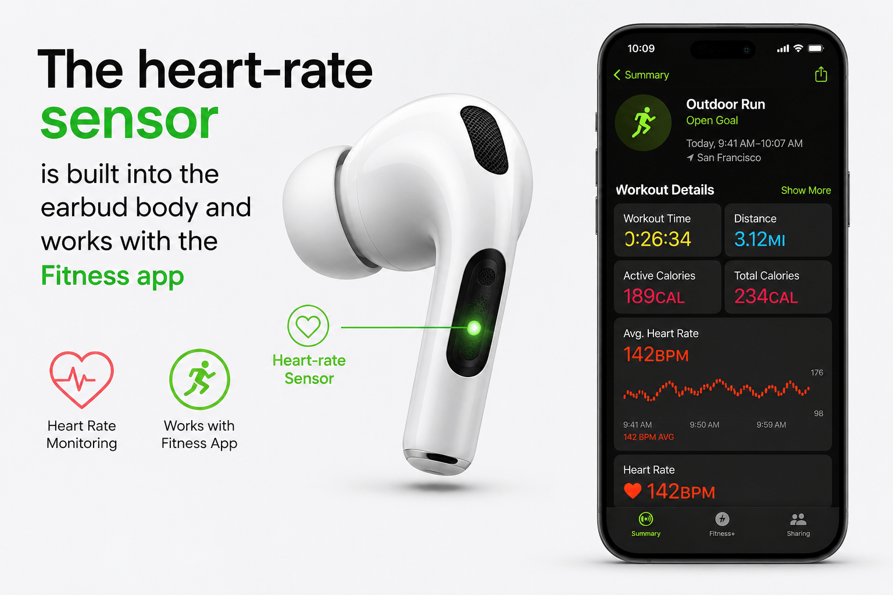

Both the AirPods Pro 3 and AirPods Pro 2 run on Apple's H2 chip, both use Bluetooth 5.3, and both plug into the same Apple ecosystem of Find My, spatial audio, and hands-free Siri. On paper, that overlap makes the decision harder than "buy the newer one." A three-year-old flagship that still ranks among the best wireless earbuds on the market doesn't automatically lose to its successor.
We chose the AirPods Pro 3. Not because it's newer, but because a specific cluster of upgrades — active noise cancellation, fit, and battery life — changes how the earbuds perform in situations people actually care about: commutes, flights, and workouts. At the same time, the Pro 3 launched with a documented static/hiss issue that a meaningful number of owners are still reporting months later, and its firmer eartips have created comfort complaints that didn't exist with the Pro 2.
Our Choice: AirPods Pro 3
For most buyers choosing between the two today, we'd recommend the AirPods Pro 3. The improvements that carried the most weight were noise cancellation, battery life, redesigned fit, heart-rate sensing, and a higher durability rating (IP57 vs IP54). Together, they add up to an earbud that performs better in noisy environments, lasts longer per charge, and does more for active users.
Quick Comparison Table
| Feature | AirPods Pro 3 | AirPods Pro 2 | Our Pick |
|---|---|---|---|
| MSRP (launch) | $249.99 | $249.99 | Tie |
| Chip | H2 | H2 | Tie |
| Case chip | U2 (precision finding) | — | Pro 3 |
| Battery (ANC on) | ~8h42m (SoundGuys) | ~5h43m (SoundGuys) | Pro 3 |
| Active Noise Cancellation | ~10dB more attenuation | Strong, prior benchmark | Pro 3 |
| Transparency Mode | Improved, more natural | Adaptive, well-regarded | Pro 3 |
| Water/dust resistance | IP57 | IP54 | Pro 3 |
| Heart-rate monitoring | Yes, built-in | No | Pro 3 |
| Bluetooth | 5.3 | 5.3 | Tie |
| Eartip sizes | 5 (incl. XXS), foam-infused | 3–4 silicone | Depends |
| Fit/comfort | Mixed reports, firmer tips | Generally well-tolerated | Depends |
| Documented issue | Static/hiss with ANC on | No comparable issue | Pro 2 |
The specifications that matter most here are noise cancellation, battery life, and durability — those are the differences an average user will actually notice day to day. Bluetooth version and chip are identical, so connection stability and processing power are not differentiators.
1. The Improved Noise Cancellation Is One of the Biggest Reasons
Apple's own claim is that the AirPods Pro 3 deliver the "world's best in-ear Active Noise Cancellation," removing up to 2x more noise than the Pro 2 and 4x more than the original AirPods Pro, tested to the IEC 60268-24 standard. That's a manufacturer claim, and manufacturer testing conditions always deserve some skepticism.
What makes this more credible is that SoundGuys ran its own lab measurements and found the Pro 3 blocks roughly 10dB more noise than the Pro 2 across the audible frequency range — and because of how the human ear perceives loudness, a 10dB reduction is roughly equivalent to sound being cut in half again. In a separate test, SoundGuys measured 90% noise reduction on the Pro 3, which they reported as beating Sony's and Bose's flagship earbuds, and even Apple's own over-ear AirPods Max, for ANC performance.
Why this matters: ANC performance is never uniform — it depends heavily on how well the earbud seals in your ear canal, which is why fit (discussed next) is tied directly to how much benefit you actually get from the improved ANC hardware.
This was the single biggest factor behind choosing the Pro 3. For buyers who spend a lot of time in loud environments, it's the upgrade most likely to be noticeable on day one.
2. The New Fit Makes a Bigger Difference Than the Specs Suggest — But It's Not Universally Better
Apple says the Pro 3's redesign was informed by more than 10,000 ear scans and 100,000 hours of testing, resulting in a smaller internal structure and a repositioned eartip geometry intended to improve seal and stability. The new eartips use a foam-infused silicone material across five sizes, including a new extra-extra-small option.
SoundGuys' reviewer found the Pro 3 easier to fit for smaller ears than the Pro 2, noting they previously had to use third-party foam tips to get a stable seal with the older model. Fit and seal directly affect both ANC and bass response, so a better seal isn't just a comfort upgrade — it's a performance upgrade too.
That said, this is where the picture gets less flattering for the Pro 3. A USA Today review documented the opposite experience: the reviewer found the new, firmer tips uncomfortable across all three included sizes, and noted that Reddit threads and Apple's own support forums contain a recurring pattern of complaints — sore ears, irritation, tips falling out more easily, and even minor scratches.
Our take: The ANC and bass improvements genuinely depend on getting a good seal. But the recurring comfort complaints are real enough that we can't call the new fit a universal improvement. If comfort is your top priority, try the Pro 3 in person or buy from a retailer with an easy return policy.

3. The Sound Improvements Are Noticeable, With Some Caveats
Apple's marketing describes a "multiport acoustic architecture" that controls airflow inside the earbud, which the company says widens the soundstage, deepens bass response, and sharpens vocal clarity — all manufacturer claims that deserve independent verification.
On that front, the reviews are largely positive. What Hi-Fi? described the Pro 3's sound as spacious, powerful, and dynamic, with clear and expressive vocals. SoundGuys' lab testing found the bass response notably robust, describing it as well-suited to bass-heavy genres like hip-hop.
Sound is inherently subjective. TechRadar's reviewer praised the Pro 3's sound as "zealous and head-turning," particularly with dynamic head tracking enabled, without directly quantifying the gap versus Pro 2. The redesigned acoustics contributed to the decision, but this was a secondary factor rather than a primary one — the Pro 2 was already well regarded for sound quality.
4. The Extra Battery Life Matters
This is one of the more clear-cut, independently confirmed differences. Apple's spec sheet lists up to 8 hours of ANC listening time on the Pro 3 versus up to 6 hours on the Pro 2 — a claimed 67% improvement. SoundGuys' own standardized testing measured 8 hours 42 minutes on the Pro 3 against 5 hours 43 minutes on the Pro 2, which lines up closely with Apple's stated figures.
Real-world note: One TechRadar reviewer reported getting closer to 5.5 hours with extra features like Spatial Audio and heart-rate sensing running. Battery specs are best-case numbers — but two extra hours per charge is still the difference between needing a mid-day top-up and not needing one at all.
5. Heart-Rate Monitoring Adds Something the Pro 2 Cannot
For the first time, AirPods can measure heart rate directly, using a built-in sensor that works with Apple's Fitness app and select third-party apps, and supports over 50 workout types, according to Apple. This requires an iPhone running iOS 26 or later.
This is a genuinely new capability, not an incremental tweak — the Pro 2 has no equivalent hardware. But it's important to be clear-eyed about who benefits. If you already own an Apple Watch, or use a dedicated fitness tracker, in-ear heart-rate sensing is a nice-to-have rather than something that changes your workflow. It's most useful for people who don't wear a smartwatch but still want basic heart-rate data during exercise.

6. The Higher IP57 Rating Gives the Pro 3 an Edge for Active Use
According to Apple's official specifications, the AirPods Pro 3 carry an IP57 rating, while the AirPods Pro 2 (USB-C version) are rated IP54. In practical terms, the water resistance moves from splash/light-rain resistance (4) to protection against temporary immersion (7).
That translates to more confidence during sweaty workouts, running in light rain, or general outdoor use. It does not mean the earbuds are waterproof, and Apple's own documentation is explicit that water resistance can degrade over time and isn't covered by warranty.
7. Better Microphones Make Calls More Reliable
Apple markets improved microphones on the Pro 3 for calls and voice capture, but at the time of writing we found less independent, quantified testing specifically isolating microphone/call quality between the two generations. Reviewers who tested the Pro 3 generally described call quality as strong, consistent with Apple's H2-chip-driven voice isolation, but we're not able to point to a controlled side-by-side test with hard numbers. If call quality in noisy environments is a priority for you, we'd treat this as a plausible but not yet fully independently verified improvement.
What Didn't Change — And Why That Matters
It's easy to read a list of upgrades and assume the older model is now obsolete. It isn't. Both generations share:
- The same H2 chip, meaning processing power and Adaptive EQ are identical
- Bluetooth 5.3, with the same AAC/SBC codec support (neither supports LDAC or aptX)
- Transparency Mode and Adaptive Audio
- Hearing aid–related hearing features
- Live Translation — works on both models with latest firmware and iOS 26+
- Broad Apple ecosystem integration: Find My, hands-free Siri, automatic device switching
This overlap is exactly why the Pro 2 remains a genuinely capable product today, and why this isn't a case of the older model being outdated.
Why We Ultimately Passed on the AirPods Pro 2
The Pro 2 isn't a bad product — quite the opposite. But when we lined the two up directly, the combination of stronger, independently verified ANC performance, a real battery-life gain, a higher durability rating, and the addition of heart-rate sensing added up to enough cumulative value to justify the Pro 3 for most new buyers, especially since both launched at the same $249.99 price.
The one place the Pro 3 doesn't clearly win is comfort. The documented static/hiss issue and the recurring fit complaints are real drawbacks worth taking seriously, and they're the main reason this isn't an unqualified recommendation for everyone.
But There Are Good Reasons to Buy AirPods Pro 2
The Pro 2 is the smarter choice if:
- You can find it significantly cheaper. Pro 2 pricing has occasionally dropped as low as $153.99–$179 during major sales events
- You already own a pair and they're working well
- You don't care about heart-rate tracking, especially if you already use an Apple Watch or other fitness wearable
- You're sensitive to firmer eartips. The Pro 2's original silicone tips are softer
- You want to sidestep the reported ANC static issue entirely, which had not been fully resolved as of the most recent firmware updates
Value tip: If the price gap between the two is large enough — for example, Pro 2 at $150–$180 versus Pro 3 at full price — the Pro 2 can be the better value even though it's the older model.
Should You Upgrade From AirPods Pro 2?
- Your Pro 2's battery has noticeably degraded with age
- You regularly travel or commute through loud environments and want stronger ANC
- You want in-ear heart-rate tracking without wearing a watch
- You want a higher water/sweat resistance rating for workouts
- You're comfortable trying the new eartips and returning them if the fit doesn't work
- Battery life still meets your needs
- The current fit is comfortable and you're wary of the new firmer tips
- ANC performance already satisfies you in your typical environments
- You'd rather put the money toward something else
There's no urgency here. Live Translation, one of the more headline-grabbing recent features, works on both models. This is an upgrade of degree, not of necessity.
Who Should Buy Each Model?
AirPods Pro 3 are best for:
- First-time AirPods Pro buyers with no existing pair to trade against
- Frequent flyers and commuters who prioritize maximum ANC
- Runners, gym-goers, and outdoor exercisers who want a higher durability rating and heart-rate data
- Buyers who don't already own an Apple Watch but want basic fitness metrics
- Heavy daily listeners who will benefit most from the extra battery runtime
- Buyers willing to test the new eartips and return them if they don't fit well
AirPods Pro 2 are best for:
- Budget-conscious buyers who can find a solid discount
- Current Pro 2 owners with no functional complaints
- Buyers who specifically prefer softer, more flexible eartips
- Anyone who wants to avoid the still-unresolved Pro 3 static/ANC reports until Apple issues a confirmed fix
- Buyers who don't need heart-rate sensing or the IP57 rating
Which One Offers Better Value?
Both models launched at the same $249.99 MSRP. At full retail price, the Pro 3's combination of better ANC, longer battery life, and added features makes it the stronger overall package for the same money.
Pricing on both models fluctuates significantly. Through 2026, the AirPods Pro 3 have been discounted as low as roughly $169–$210 during major sales events. The AirPods Pro 2 have also seen discounts, historically down to the $150–$199 range, though steep Pro 2 discounts have become less common as retailers shift promotional focus to the newer model.
Price Disclaimer: Amazon prices can change frequently, sometimes from one day to the next. The prices mentioned in this article are provided as a general reference and may differ from the current Amazon listing. For the most accurate and up-to-date price, we recommend checking the Amazon product page before making a purchase.
Pros and Cons
AirPods Pro 3
- Independently measured, substantially stronger ANC (SoundGuys lab testing)
- Confirmed longer battery life (8h42m vs 5h43m, ANC on)
- Heart-rate sensing built in
- Higher IP57 water/dust resistance rating
- Five eartip sizes for a wider range of ear shapes
- Documented, still-unresolved static/hiss reports with ANC enabled
- Firmer eartips have generated recurring comfort complaints
- Some reviewers still consider battery life a relative weak point vs non-Apple competitors
- Limited independent microphone/call-quality testing available
AirPods Pro 2
- Well-established, widely praised sound and ANC for its price bracket
- Softer eartips that many users find more comfortable
- No comparable widely reported hardware issue
- Frequently discounted, sometimes significantly
- Shorter battery life, confirmed by independent testing
- No heart-rate sensing
- Lower IP54 water/dust resistance rating
- Fewer eartip size options than the Pro 3
Editorial Score
Based on specifications and independent test data cited throughout this article — not an Amazon customer rating.
| Category | AirPods Pro 3 | AirPods Pro 2 |
|---|---|---|
| Sound | 9/10 | 8.5/10 |
| ANC | 9.5/10 | 8.5/10 |
| Comfort/Fit | 7.5/10 | 8.5/10 |
| Battery | 9/10 | 7.5/10 |
| Features | 9/10 | 8/10 |
| Reliability | 7.5/10 | 8.5/10 |
| Value at full price | 8.5/10 | 8/10 |
| Overall | 8.6/10 | 8.3/10 |
Our Final Verdict
We chose the AirPods Pro 3 over the AirPods Pro 2. The newer model doesn't reinvent the AirPods Pro formula — it refines several areas at once, and the ones that matter most in daily use (independently verified ANC performance and battery life) are backed by real lab data, not just marketing claims. Heart-rate sensing and the higher durability rating add genuine, if secondary, value for active users.
That said, this isn't a clean sweep. The still-unresolved static/hiss reports and the recurring fit complaints around the firmer eartips are real enough, and documented across enough independent sources, that we can't recommend the Pro 3 without flagging them clearly. If you're sensitive to eartip comfort or want to avoid a known-but-unresolved software quirk, the Pro 2 remains a legitimate, well-reviewed alternative — especially at a discount.
If you already own AirPods Pro 2, upgrading is optional, not mandatory. Base your decision on how your current battery is holding up, how much you value stronger ANC and fit-tip variety, and how large the price gap is when you're ready to buy.